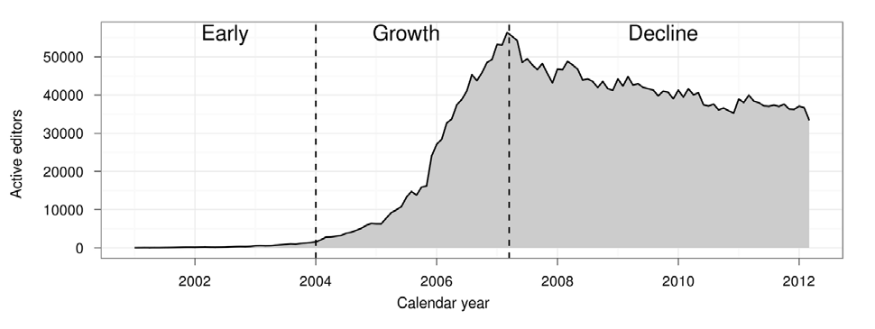
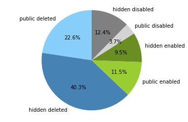
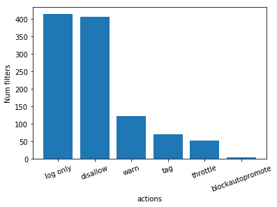

You shall not publish: Edit filters on EN Wikipedia
HCC Research Group Meeting June 2019
Lusy
 Source: Halfaker et al. "The Rise and Decline of an Open Collaboration System: How Wikipedia’s reaction to popularity is causing its decline"
Overview
- Motivation
- State of the literature/Literature: What does the scientific community know
- Documentation: What is an edit filter and why was it introduced according to Wikipedia's/MediaWiki pages?
- Data Analysis: Edit filters on English Wikipedia
- Open questions
Motivation
- What is the role of filters among existing (algorithmic) quality-control mechanisms (bots, semi-automated tools, ORES, humans)? Which type of tasks do filters take over?
- How have these tasks evolved over time (are they changes in the type, number, etc.)?
- What are suitable areas of application for rule-based systems such as filters in contrast to the other ML-based approaches?
State of the Literature

- One thing is ostentatiously missing: edit filters
What is an edit filter
- MediaWiki extension
- regex based filtering of edits and other actions (e.g. account creation, page deletion or move, upload)
- triggers before an edit is published
- different actions can be defined
Motivations for its introduction
- disallow certain types of obvious pervasive (perhaps automated) vandalism directly
- takes more than a single click to revert
- human editors can use their time more productively elsewhere
Edit filters in the quality control mechanisms frame
- the question of infrastructure
- guidelines say: for in-depth checks and problems with a particular article bots are better (don't use up resources)
- they were introduced before the ml tools came around.
- they probably work, so no one sees a reason to shut them down
- hypothesis: Wikipedia is a diy project driven by volunteers; they work on whatever they like to work
- hypothesis: it is easier to understand what's going on than it is with a ML tool. people like to use them for simplicity and transparency reasons
- hypothesis: it is easier to set up a filter than program a bot. Setting up a filter requires "only" understanding of regular expressions. Programming a bot requires knowledge of a programming language and understanding of the API.
Data Analysis: Edit Filters on EN Wikipedia
What do most active filters do?
135 repeating characters & tag, warn
30 "large deletion from article by new editors" & tag, warn
61 "new user removing references" & tag
18 "test type edits from clicking on edit bar" & deleted in Feb 2012
3 "new user blanking articles" & tag, warnDescriptive statistics

all filters: 954
public filters: 361
Active public filters: 110
disabled (but not deleted) public filters: 35
deleted public filters: 216
hidden filters: 593
active hidden filters: 91
disabled (but not deleted) hidden filters: 118
deleted hidden filters: 384Number of filter hits per month March 2009-March 2019

Filters Actions

Active Public Filters Actions

Active Hidden Filters Actions

Manual classification
vandalism, good faith and maintenance
- difficult to distinguish
- a lot of subcategories
Vandalism
id hits public comment
46 356945 "Poop" vandalism
365 85470 Unusual changes to featured or good content
16 2005 Prolific socker IGood Faith
id hits public comment
180 175939 Large unwikified new article
98 39401 Creating very short new articlemaintenance
id hits public comment
577 1566 VisualEditor bugs: Strange icons
345 13832 Extraneous formatting from browser extension
942 1573 Log edits to protected pagesOpen Questions
Current Limitations
- Only EN Wikipedia
- manual filter classification only conducted by me
Bigger picture: Upload filters

{kind=link}
Thank you!
These slides are licensed under the CC BY-SA 4.0 License.